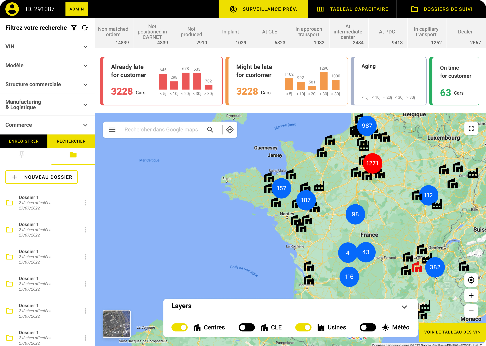

Feature 1
Nom du projet
Une phrase qui résume ce que ce projet adresse, en clair.
2×
Conversion lead → MQL
+25%
Discoverability features clés
−40%
Temps moyen sur tâche
Background
Contexte du projet en deux ou trois lignes : qui est l'entreprise, ce qui a déclenché le projet, et la situation au moment où je suis arrivé.
Détail complémentaire si nécessaire — repositionnement, contrainte business, équipe constituée…
Challenge
Le problème central à résoudre, formulé en une phrase claire.
Objectives
- Objectif 1. Une ligne qui décrit l'impact attendu.
- Objectif 2. Une ligne qui décrit l'impact attendu.
- Objectif 3. Une ligne qui décrit l'impact attendu.
- Objectif 4. Une ligne qui décrit l'impact attendu.
À propos de l'entreprise
Une description courte de l'entreprise : ce qu'elle fait, à qui elle s'adresse, ce qui rend son contexte intéressant à designer.
Tu peux ajouter ici un élément de contexte sectoriel — réglementation, taille du marché, particularité d'usage. Reste court : 2 paragraphes max.

Partenaire officiel · 2024Starting point
État initial — funnel et écrans existants au démarrage du projet.
Initial problem
Les utilisateurs approuvés ne convertissaient pas, ne déposaient pas et n'utilisaient pas le produit.
Une ligne d'explication qui développe pourquoi c'était critique côté business — coût d'acquisition, manque-à-gagner, dette opérationnelle…
Conversion
**% approved → subscribed
En dessous de la cible
Churn
**% drop-off jour 1
Pas de retour app
Exploration
**% n'explorent pas le core
Section produit principale
Écrans existants
Objectifs
Utilisateur
Faciliter la compréhension du produit.
Business
Augmenter le taux de conversion paid.
Tech
Sans refactor backend.
Comment on a procédé
Une phase de discovery solide pour comprendre les drop-offs, puis une phase design centrée sur la priorisation des impacts. Analyse data + recherche utilisateur pour aligner l'équipe sur des hypothèses validées.
Phase 1
Discovery
-
Research
User testing end-to-end de l'app existante
-
Data analysis
Analyse funnel & usage produit
-
Management
Entretiens stakeholders & support client
-
Management
Hypotheses mapping
-
Management
Rédaction du PRD
Phase 2
Design & Handoff
-
Quick prototyping
Prototypes & tests des différentes pistes
-
Management
Accord sur milestones & initiatives
-
High fidelity
Exploration visuelle finale
-
Delivery
Handoff dev par feature
-
Documentation
Mise à jour du design system
Deliverables
Feature 2
Refonte du flow paiement
Instructions affichées · +**%
Feature 3
Bandeaux de cross-selling
Avg. pageviews · +**%
Feature 4